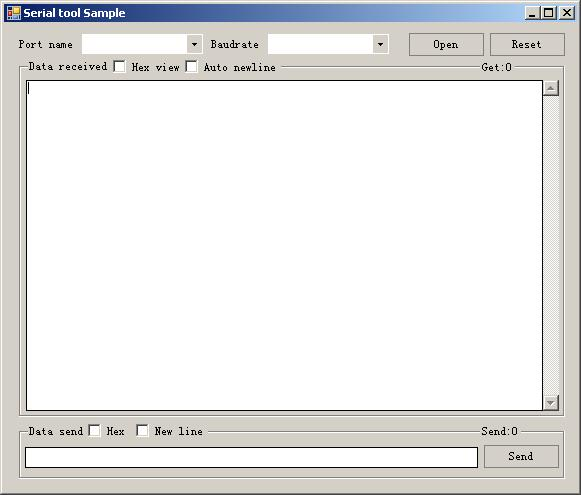

C# 串口操作系列(1)
我假设读者已经了解c#的语法，本文是针对刚打算接触串口编程的朋友阅读的，作为串口编程的入门范例，也是我这个系列的基础。
一个基本的串口程序，既然是个程序了。我们就先从功能说起，包含：
- 串口选择
- 波特率选择
- 打开
- 关闭
- 接受数据显示
- 发送数据输入
- 发送数据
- 数据量提示以及归零
好吧，有了这些功能，我们就先画出界面。例如：

这里，波特率就固定几种好了。直接界面上添加2400,4800,9600,19200,38400,57600,115200
comboPortName这里，为了我们的软件能通用所有电脑避免每次查询的效率损失，我们使用微软提供的枚举方式，代码如下：
string[] ports = SerialPort.GetPortNames();
Array.Sort(ports);
comboPortName.Items.AddRange(ports);
显然，我们需要定义一个SerialPort对象。添加DataReceived事件响应收到数据，还有一个重点，我们需要记得设置NewLine属性哦。好想有的版本不设置的时候，WriteLine和Write效果一样。
所以，我们需要初始化SerialPort对象，例如：
//初始化SerialPort对象
comm.NewLine = "/r/n";
comm.RtsEnable = true;//根据实际情况吧。
//添加事件注册
comm.DataReceived += comm_DataReceived;
初始化好串口，简单的编写打开，关闭方法，编写界面响应的是否自动换行，如何复位计数器，发送方法。以及数据处理。因为我已经写了完整注视，我就直接贴代码了。
using System;
using System.Collections.Generic;
using System.ComponentModel;
using System.Data;
using System.Drawing;
using System.Linq;
using System.Text;
using System.Windows.Forms;
using System.IO.Ports;
using System.Text.RegularExpressions;
namespace SerialportSample
{
public partial class SerialportSampleForm : Form
{
private SerialPort comm = new SerialPort();
private StringBuilder builder = new StringBuilder();//避免在事件处理方法中反复的创建，定义到外面。
private long received_count = 0;//接收计数
private long send_count = 0;//发送计数
public SerialportSampleForm()
{
InitializeComponent();
}
//窗体初始化
private void Form1_Load(object sender, EventArgs e)
{
//初始化下拉串口名称列表框
string[] ports = SerialPort.GetPortNames();
Array.Sort(ports);
comboPortName.Items.AddRange(ports);
comboPortName.SelectedIndex = comboPortName.Items.Count > 0 ? 0 : -1;
comboBaudrate.SelectedIndex = comboBaudrate.Items.IndexOf("9600");
//初始化SerialPort对象
comm.NewLine = "/r/n";
comm.RtsEnable = true;//根据实际情况吧。
//添加事件注册
comm.DataReceived += comm_DataReceived;
}
void comm_DataReceived(object sender, SerialDataReceivedEventArgs e)
{
int n = comm.BytesToRead;//先记录下来，避免某种原因，人为的原因，操作几次之间时间长，缓存不一致
byte[] buf = new byte[n];//声明一个临时数组存储当前来的串口数据
received_count += n;//增加接收计数
comm.Read(buf, 0, n);//读取缓冲数据
builder.Clear();//清除字符串构造器的内容
//因为要访问ui资源，所以需要使用invoke方式同步ui。
this.Invoke((EventHandler)(delegate
{
//判断是否是显示为16禁止
if (checkBoxHexView.Checked)
{
//依次的拼接出16进制字符串
foreach (byte b in buf)
{
builder.Append(b.ToString("X2") + " ");
}
}
else
{
//直接按ASCII规则转换成字符串
builder.Append(Encoding.ASCII.GetString(buf));
}
//追加的形式添加到文本框末端，并滚动到最后。
this.txGet.AppendText(builder.ToString());
//修改接收计数
labelGetCount.Text = "Get:" + received_count.ToString();
}));
}
private void buttonOpenClose_Click(object sender, EventArgs e)
{
//根据当前串口对象，来判断操作
if (comm.IsOpen)
{
//打开时点击，则关闭串口
comm.Close();
}
else
{
//关闭时点击，则设置好端口，波特率后打开
comm.PortName = comboPortName.Text;
comm.BaudRate = int.Parse(comboBaudrate.Text);
try
{
comm.Open();
}
catch(Exception ex)
{
//捕获到异常信息，创建一个新的comm对象，之前的不能用了。
comm = new SerialPort();
//现实异常信息给客户。
MessageBox.Show(ex.Message);
}
}
//设置按钮的状态
buttonOpenClose.Text = comm.IsOpen ? "Close" : "Open";
buttonSend.Enabled = comm.IsOpen;
}
//动态的修改获取文本框是否支持自动换行。
private void checkBoxNewlineGet_CheckedChanged(object sender, EventArgs e)
{
txGet.WordWrap = checkBoxNewlineGet.Checked;
}
private void buttonSend_Click(object sender, EventArgs e)
{
//定义一个变量，记录发送了几个字节
int n = 0;
//16进制发送
if (checkBoxHexSend.Checked)
{
//我们不管规则了。如果写错了一些，我们允许的，只用正则得到有效的十六进制数
MatchCollection mc = Regex.Matches(txSend.Text, @"(?i)[/da-f]{2}");
List<byte> buf = new List<byte>();//填充到这个临时列表中
//依次添加到列表中
foreach (Match m in mc)
{
buf.Add(byte.Parse(m.Value,System.Globalization.NumberStyles.HexNumber));
}
//转换列表为数组后发送
comm.Write(buf.ToArray(), 0, buf.Count);
//记录发送的字节数
n = buf.Count;
}
else//ascii编码直接发送
{
//包含换行符
if (checkBoxNewlineSend.Checked)
{
comm.WriteLine(txSend.Text);
n = txSend.Text.Length + 2;
}
else//不包含换行符
{
comm.Write(txSend.Text);
n = txSend.Text.Length;
}
}
send_count += n;//累加发送字节数
labelSendCount.Text = "Send:" + send_count.ToString();//更新界面
}
private void buttonReset_Click(object sender, EventArgs e)
{
//复位接受和发送的字节数计数器并更新界面。
send_count = received_count = 0;
labelGetCount.Text = "Get:0";
labelSendCount.Text = "Send:0";
}
}
}
至此，一个标准的串口调试助手就完成了。留下一个思考题，如果接收数据后，更新界面的时候，尚未操作完成，此时并发了关闭串口的操作。程序会如何呢？
- 原文作者：Binean
- 原文链接：https://bineanju.gitee.io/blog/post/20130612%E4%B8%B2%E5%8F%A3%E6%93%8D%E4%BD%9C%E7%B3%BB%E5%88%971/
- 版权声明：本作品采用知识共享署名-非商业性使用-禁止演绎 4.0 国际许可协议进行许可，非商业转载请注明出处（作者，原文链接），商业转载请联系作者获得授权。